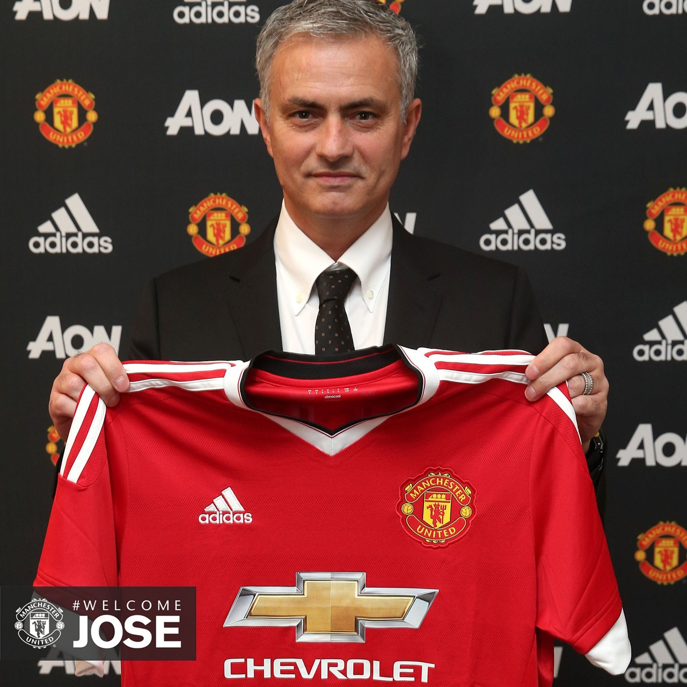
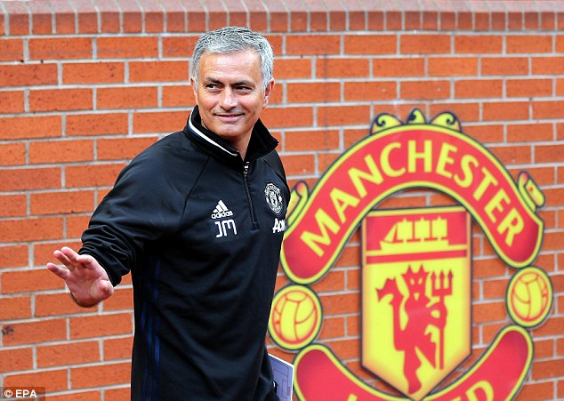

Our Manager - JOSE MOURINHO
 10/12/2016 10:24, Report by Ivan Spasov
JOSE MARIO DOS SANTOS MOURINHO FELIX
known as José Mourinho, is a Portuguese professional football manager and former football player. He is the manager of Premier League club Manchester United.
He is regarded by a number of players, coaches, and commentators as one of the greatest and most successful managers in the world.In 2015 Mourinho was named the best Portuguese coach of the century by the Portuguese Football Federation (FPF). Mourinho began his involvement in professional football as a player in the Portuguese Second Division. He studied sports science in Technical University of Lisbon and attended coaching courses in Britain. In Lisbon, he worked as a physical education teacher and had spells working as a youth team coach, a scout, and an assistant manager. In the early 1990s, he became an interpreter for Sir Bobby Robson at Sporting CP and Porto in Portugal, and Barcelona in Spain.
Mourinho impressed with brief but successful managerial periods at Benfica and União de Leiria, taking the latter to their highest ever league finish. He returned to Porto in early 2002 as head coach, winning the Primeira Liga, Taça de Portugal, and UEFA Cup in 2003. In the next season, Mourinho guided the team to victory in the Supertaça Cândido de Oliveira, to the top of the league for a second time, and won the highest honour in European club football, the UEFA Champions League. Mourinho moved to Chelsea the following year and won the Premier League title with a record 95 points, the club's first league title in 50 years, and the League Cup in his first season. In his second year, Chelsea retained the Premier League and in 2006–07 he took the club to an FA Cup and League Cup double. Mourinho left Chelsea in September 2007, amidst reports of a rift with club owner Roman Abramovich.
In 2008, Mourinho moved to Serie A club Inter Milan. Within three months he had won his first Italian honour, the Supercoppa Italiana, and completed the season by winning the Serie A title. In 2009–10, Inter became the first Italian club to win the treble of Serie A, Coppa Italia and the UEFA Champions League, also the first time Inter had won the latter competition since 1965. He is one of only five coaches to have won the European Cup with two different teams,along with Ernst Happel, Ottmar Hitzfeld, Jupp Heynckes and Carlo Ancelotti. He won the first ever FIFA World Coach of the Year Award in 2010.He then signed with Real Madrid in 2010, winning the Copa del Rey in his first season. The following year, he won the La Liga and became the fifth coach, after Tomislav Ivić, Ernst Happel, Giovanni Trapattoni and Eric Gerets, to have won league titles in at least four different countries: Portugal, England, Italy and Spain.After leaving Madrid in June 2013, Mourinho returned to England to manage Chelsea for a second spell, during which they won another league championship, but was sacked on 17 December 2015, after a poor run of results left Chelsea just outside the relegation zone.Following several months out of the game after losing his job at Chelsea for the second time, Mourinho was confirmed as the new manager of Manchester United on 27 May 2016. Because of his tactical knowledge, charismatic (but also very controversial) personality and what his opponents regard as emphasis on getting results over playing beautiful football, he is often seen, by both admirers and critics, as the successor of Argentine manager Helenio Herrera.
TacticsMourinho is highly renowned for his tactical prowess, game management and adaptability to different situations. A usual feature of his teams is playing with three or more central midfielders, as Mourinho has stressed midfield superiority as crucial in winning games. As a Porto manager, Mourinho employed a diamond 4–4–2 formation, with his midfield – consisting of Costinha or Pedro Mendes as defensive midfielder; Maniche and Dmitri Alenichev as wide central midfielders; and Deco on the tip – acting as a cohesive unit rather than a collection of individuals, providing Porto with midfield superiority while allowing the full-backs to move forward. During his first two years at Chelsea, Mourinho employed a fluid 4–3–3 formation, having Claude Makélélé play the role of deep-lying midfielder. This gave Chelsea a 3 v. 2 midfield advantage over most English teams playing 4–4–2 at the time, and won Chelsea Premier League titles in 2004–05 and 2005–06. Mourinho explained:
ReceptionMourinho is widely regarded by several players and coaches to be one of the best managers of his generation and one of the greatest ever managers. Manchester City manager Pep Guardiola has described Mourinho as "probably the best coach in the world". Chelsea midfielder Frank Lampard has stated that Mourinho is the best manager he has ever worked for. He has sometimes been accused for playing defensive, dull football to grind out results. Mourinho has been criticised for negative tactics by a few coaches and players, including Johan Cruyff, and Morten Olsen. Cruyff stated, "José Mourinho is a negative coach. He only cares about the result and doesn't care much for good football. After one game, Cruyff stated, "Mourinho is not a football coach. To play at home with seven defenders, you must be very afraid. "Olsen stated, "I don't like his persona or the way he plays football negatively."